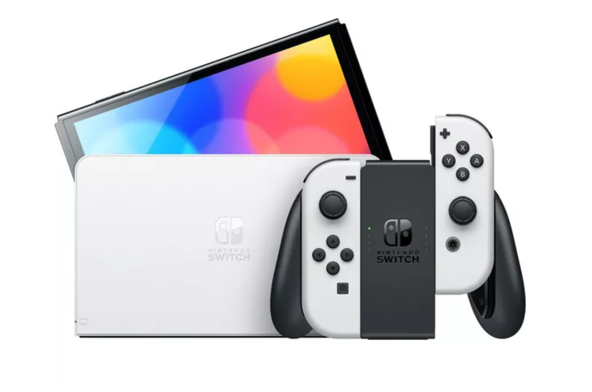

The original Nintendo Switch, released in March 2017, revolutionized gaming with its hybrid design, allowing players to seamlessly switch between handheld, tabletop, and docked modes. Featuring a 6.2-inch touchscreen, detachable Joy-Con controllers. The console offered both portability and home console power. Its launch lineup included The Legend of Zelda: Breath of the Wild, which became a defining title for the system. Despite early concerns about hardware durability and battery life, the Switch quickly became a massive success, setting the stage for future iterations like the Switch Lite and OLED models.More info here.

Released 2021
The Switch Oled
The original Nintendo Switch, released in March 2017, revolutionized gaming with its hybrid design, allowing players to seamlessly switch between handheld, tabletop, and docked modes. Featuring a 6.2-inch touchscreen, detachable Joy-Con controllers. The console offered both portability and home console power. Its launch lineup included The Legend of Zelda: Breath of the Wild, which became a defining title for the system. Despite early concerns about hardware durability and battery life, the Switch quickly became a massive success, setting the stage for future iterations like the Switch Lite and OLED models.More info here.